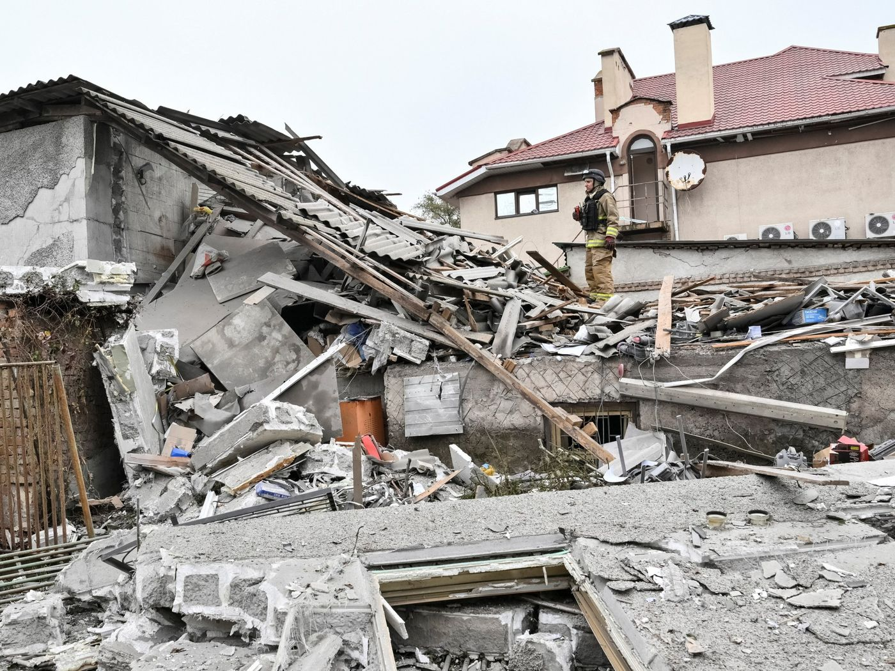

World

Archaeologists find world’s oldest shipwreck off Turkish coast
Ceramic jars from a 4,700-year-old Bronze Age vessel reveal ancient Mediterranean trade routes.

Donald Trump announces plans for resource exploration in Greenland
The US president says large-scale searching for oil, gas and minerals will begin in the Arctic territory.

Drone attacks sink commercial ship off Bulgaria in Black Sea
A second vessel was damaged in Black Sea strikes, raising concerns over vital trade lanes that supply grain to global markets.

Donald Trump announces Russia Ukraine energy ceasefire deal
The United States chief eases Russian sanctions to cut global fuel prices while demanding new leadership in Ukraine.

Nepal evacuates northern villages as flash flood destroys buildings
Villagers along the Budhi Gandaki river are urged to move to safety after a landslide triggers severe flooding.

Hurricane Simon reaches Category 4 off Mexico Pacific coast
The storm packs winds up to 241 kilometres per hour as southwestern Mexico prepares for heavy flooding and land evacuations.

Ukraine Accuses SpaceX of Throttling Starlink Satellite Services
Speed limits placed on moving satellite terminals disrupted drone defenses and frontline military operations across the country.
WorldHouthis hit Saudi Aramco offices as regional conflict escalates
A fire broke out at the oil firm’s Dhahran facility while flight suspensions expand and international leaders warn of global economic effects.

US judge extends White House press access for banned media outlets
A federal court ruled that Donald Trump likely violated constitutional rights by barring journalists from briefings.
WorldRussian strikes hit Ukrainian energy sites leaving 600,000 without power
The heavy missile and drone attacks hit Kyiv and other regions despite a recently announced energy ceasefire.
WorldUS charges Saudi OpenAI engineer over hidden office recording device
Federal authorities in the United States say an engineer used AI tools to research and hide a bug in an executive conference room.
WorldUkrainian former military officer goes on trial in Germany over Nord Stream blasts
A 50-year-old Ukrainian faces war crime charges in Hamburg over the 2022 explosion of Baltic Sea gas pipelines.
WorldRussia arrests Japanese journalist Yuki Imai on spying charges
Russian security agents detained the reporter in Sakhalin before flying him to Moscow for court proceedings.
WorldMan dies and several suffer injuries in US theme park rollercoaster fall
US authorities inspect Six Flags theme parks as safety officials investigate a fatal rollercoaster fall in Georgia.
WorldSaudi military coalition bombs Yemen fuel site following Riyadh airport attacks
Airlines suspend flights to Saudi Arabia as authorities investigate air defence failures after fatal missile strikes in the capital.
WorldUS ambassador to Greece Kimberly Guilfoyle resigns following misconduct claims
The White House asked Ambassador Kimberly Guilfoyle to step down after allegations she offered administration access for money.
WorldIndian police detain youth leaders demanding election chief resignation
Youth movement and opposition leaders call for the removal of India’s chief election commissioner after millions of voter names were deleted.

UK PM Andy Burnham alleges Russian meddling in Brexit and seeks new EU trade deal
The British leader acknowledged 2016 referendum interference and promised to renegotiate trade terms at a Brussels summit next month.
WorldUS immigration agents search home of Congresswoman Ilhan Omar
Federal officers execute a search warrant at the Minnesota lawmaker’s Washington-area home weeks before the US midterm elections.
WorldNorth Korea fires ballistic missiles off east coast
The military tests follow South Korea’s launch of a hypersonic weapon, raising security concerns across the Korean Peninsula.
WorldPakistan imposes emergency rule in Khyber Pakhtunkhwa province
Federal authorities suspend the provincial administration led by Imran Khan’s party ahead of a planned protest march on the capital.
WorldDeadly Houthi strikes hit Riyadh airport and disrupt flights
Repeated missile and drone attacks on Saudi Arabia’s main airport leave several foreign workers dead and force airlines to cancel regional flights.
WorldUkrainian drone attack shuts down Yandex data centre in Vladimir
Operations at a major Russian technology facility are suspended following a third strike in one week on the network.
WorldMan dies after entering tiger enclosure at UK wildlife park
A visitor has died following a tiger attack at Yorkshire Wildlife Park in northern England after gaining access to the enclosure.
WorldHurricane Isaias leaves four dead and 500,000 without power in United States
The first hurricane of the 2026 Atlantic season caused severe damage across Florida and Alabama before weakening.
WorldNine killed in Pennsylvania shooting including two children
Nine people including two children and a gunman died during a house shooting standoff in Pennsylvania, local authorities reported.
WorldChrista Pike returned to Tennessee prison after surviving failed execution
The 50-year-old death row prisoner was discharged from hospital 10 days after two lethal injection doses failed to kill her.
WorldAttack on Riyadh international airport injures several and grounds flights
Saudi authorities suspended operations at King Khalid International Airport following a strike on Saturday afternoon.
WorldPolish police arrest woman after third school attack in one week
A 21-year-old student injured three people at a post-secondary college in Warsaw on Saturday.
WorldTrump calls for new Ukrainian president after diesel deal criticism
The US president urged Kyiv to halt refinery strikes after Volodymyr Zelensky warned a Russian fuel agreement funds Moscow’s military.
WorldIndonesian police detain former headmaster over alleged student abuse
Ahmad Imanuddin Sumar faces investigation after former students uncovered evidence of assault at a Lombok boarding school.
WorldNetherlands seeks Ghana’s help to disrupt Bolle Jos drug network
Dutch police officers could be sent to Ghana after nearly 3.9 tonnes of cocaine was found in plastic waste shipped from Ghana to France.